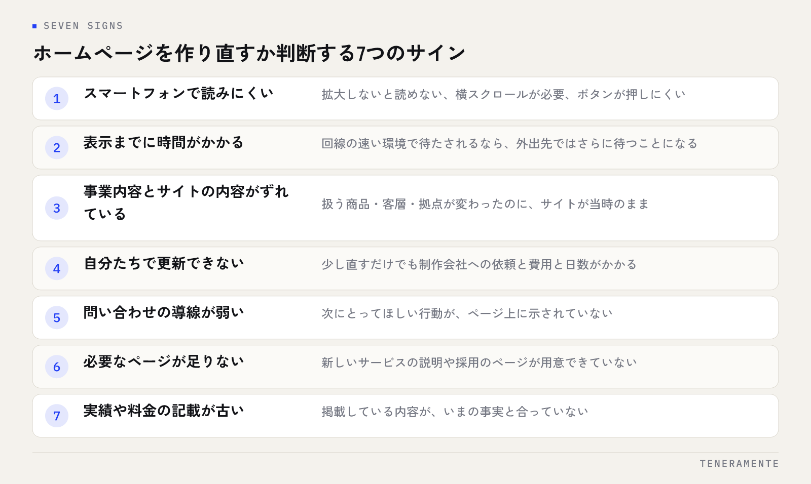

ホームページのリニューアルのタイミングで迷っている方に、先に結論をお伝えします。判断の軸は、見た目が古いかどうかではなく、今のサイトが機会を落としているかどうかです。この記事では、作り直しを検討すべき7つのサインと、サインが出ていても全面改修までは要らない場合の見分け方を順に整理します。
📌 この記事の結論
リニューアルの適期は「何年経ったか」では決まりません。問い合わせ・採用・信頼の3つのどれかが、サイトのせいで落ちているときが着手のタイミングです。まず落ちている場所を特定し、全面改修が必要か部分改修で足りるかを分けて判断します。
01「何年で作り直すか」では決まらない
ホームページのリニューアルは、何年周期という決まりがありません。5年経っても十分に機能しているサイトもあれば、公開から2年で役目を果たせなくなるサイトもあります。分かれ目は経過年数ではなく、事業の内容とサイトの内容がずれていないかです。
扱う商品が変わった、主力の客層が変わった、採用を始めた、拠点が増えた。こうした変化があったのにサイトが当時のままなら、それは古いのではなく事実として合っていない状態です。
逆に、事業が大きく変わっておらず、スマートフォンで問題なく閲覧でき、問い合わせも届いているなら、急いで作り直す理由はありません。デザインの流行は毎年動きますが、それだけを理由に全面改修する必要はないと考えています。
02作り直しを検討すべき7つのサイン
判断のためのサインを、影響の大きい順に並べます。

見る順番
上から2つは、当てはまるなら早めに手を打つ性質のものです。下に行くほど「気づいたときに直す」で間に合います。全部が当てはまる必要はありません。
サインの数を数えることより、どのサインが出ているかを特定するほうが大切です。落ちているものが問い合わせなのか、採用の応募なのか、それとも初対面の相手からの信頼なのかで、手を入れる場所が変わります。
たとえば「自分たちで更新できない」だけが当てはまるなら、必要なのはデザインの刷新ではなく、更新できる仕組みへの移行です。「事業内容とサイトの内容がずれている」なら、優先すべきは掲載内容の作り直しで、見た目は後からで構いません。サインごとに打つ手が違うので、まとめて「古いから作り直す」と決めないでください。
03スマートフォンでの見え方は最優先で確認する
7つのうち、最初に確かめてほしいのがスマートフォンでの見え方です。会社案内サイトであっても、名刺交換のあとや検索から訪れる人の多くは手元の端末で開きます。
自分の端末で自社サイトを開き、次を確認してください。文字を拡大しないと読めない、横にスクロールしないと収まらない、ボタンが小さすぎて押しにくい、電話番号をタップしても発信できない。どれか1つでも当てはまれば、それは見た目の問題ではなく、相手が用を足せない状態です。
同時に、表示までの待ち時間も見ます。回線の速い環境で待たされるなら、外出先ではさらに待つことになります。読み込みの遅さは、内容を読む前に離脱される原因になります。
04サインが出ていても、全面改修が不要な場合
サインが出た＝作り直し、ではありません。次のような場合は、部分的な手当てで十分なことがあります。
- 情報が古いだけ：サービス内容、実績、料金の記載を更新すれば済む
- 1ページだけ足りない：新しいサービスの説明ページや採用ページを追加すれば足りる
- 問い合わせ導線が弱いだけ：フォームの項目を減らす、各ページに導線を置くなど、局所的な改善で変わる
- 文章が読みにくいだけ：見出しと段落を整理し、専門用語に説明を足すだけで伝わり方が変わる
判断の分かれ目は、土台が使えるかどうかです。スマートフォンで問題なく閲覧でき、更新の手段があり、必要なページを足せる構造なら、土台は生きています。逆に、更新するたびに制作会社に依頼が必要で、少し直すだけで費用と日数がかかるなら、そこが作り直しの理由になります。
05全面改修・部分改修・運用改善の使い分け
進め方は3つに分かれます。どれを選ぶかで、費用も期間も変わります。
| 進め方 | 向いている状況 | 主な内容 |
|---|---|---|
| 全面改修 | 事業内容とサイトが合っていない／スマホ対応ができていない／自分で更新できない | 構成から作り直す。ページ設計・デザイン・実装・移行 |
| 部分改修 | 土台は使えるが、特定のページや導線が足りない | ページの追加・差し替え、フォームや導線の改善 |
| 運用改善 | 構造に問題はなく、中身が更新されていない | 情報の更新、実績や事例の追加、写真の差し替え |
多くの場合、運用改善から始めて足りない部分を部分改修で埋め、それでも届かないときに全面改修という順番が無理がありません。費用の考え方そのものはホームページ制作の費用相場と失敗しない依頼方法にまとめています。
作り直しても更新されなければ、2年後に同じ相談をすることになります。
06着手する前に決めておく4つのこと
リニューアルで最も多い失敗は、目的を決めないまま見た目の話から始めることです。着手前に、次の4つを社内で決めておいてください。
- 誰に届けるサイトか：新規の見込み客か、既存の取引先か、応募者か。優先する相手を1つ決めます
- 何をしてほしいか：問い合わせ、資料請求、来社、応募。ページごとに「次にとってほしい行動」を1つに絞ります
- 公開後、誰が更新するか：担当者と更新頻度を先に決めます。ここが決まっていないと、更新できる仕組みを入れても使われません
- 今のサイトから何を引き継ぐか：残す文章、差し替える写真、削除するページを一覧にします
特に3つ目が抜けたまま進むと、公開直後がいちばん新しい状態になり、そこから古くなる一方になります。リニューアルは公開が終わりではなく、更新の始まりです。
07よくある質問
ホームページのリニューアルはどれくらいの期間がかかりますか？
URLが変わると検索結果に影響しますか？
今のサイトの制作会社と連絡が取れません。作り直せますか？
08まとめ：落ちている場所を特定してから決める
ホームページのリニューアルのタイミングは、年数でも流行でもなく、今のサイトのせいで落ちているものがあるかで判断します。まずスマートフォンでの見え方を確かめ、次に事業内容とサイトの内容がずれていないかを見る。そのうえで、運用改善・部分改修・全面改修のどれで足りるかを分けて考えてください。
作り直すと決めたら、着手前に「誰に・何をしてほしいか・誰が更新するか・何を引き継ぐか」の4つを決めます。この4つが決まっているリニューアルは、公開後に効いてきます。
TENERAMENTEでは、ホームページ・LP制作を、公開後に自分たちで更新できる形まで含めてご一緒しています。全面的に作り直すべきか、部分的な改善で足りるのかを一緒に見極めたい段階でも構いませんので、ご相談ください。